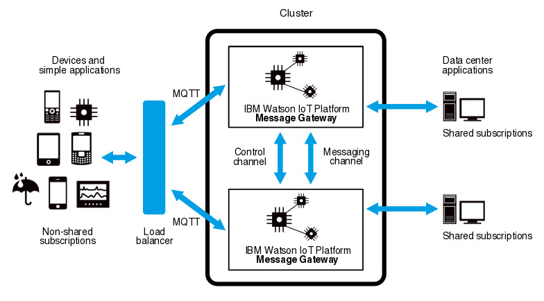

Clustering in Eclipse Amlen
You can use clusters of Eclipse Amlen servers to permit a greater number of connections than would be possible on a single server and allow a greater throughput of messaging traffic. Clustering extends the scope of topic trees beyond the limit of a single server; a common topic space is created in which messages are received by subscribers regardless of the server on which they are published provided that the subscribers are using MQTT non-shared subscriptions.
By connecting multiple Eclipse Amlen servers together on a local high-speed LAN to form a cluster, you can scale the maximum messaging throughput or the maximum number of concurrent connections beyond the capacity of a single Eclipse Amlen server. All Eclipse Amlen servers in a cluster share a common topic space which means that messages published on a particular topic are received by clients that are using MQTT non-shared subscriptions and subscribed to that topic regardless of which server they are connected to. Clients that use JMS, MQ Connectivity, or shared subscriptions can receive messages that are published only on the server on which the clients subscribe. For more information about shared subscriptions, see Shared subscriptions.
Clustering of Eclipse Amlen servers is of particular use in Internet of Things (IoT) applications where there are large numbers of devices or simple applications that publish and subscribe to a small number of data center applications. In such scenarios, the devices or simple applications typically use MQTT and non-shared subscriptions; the data center applications are more likely to use JMS, MQ Connectivity, or shared subscriptions.
Cluster configuration
The following diagram shows a simple clustering configuration. There are two Eclipse Amlen servers in the cluster that is routing messages to and from the devices and simple applications that are using MQTT and non-shared subscriptions and also to and from the data center applications that are using shared subscriptions. A load balancer makes the cluster appear as a single server to clients and ensures that they connect to the correct server.

A server finds other servers in the cluster by using multicast discovery, or by specifying a known subset of the other servers in the cluster. Each server is a peer of all other servers in the cluster. The control channel sends subscription information and other related information to all servers in the cluster; the same control information is sent to all the servers in the cluster. In addition, a messaging channel is created from each server to each of the other servers in the cluster. Only messages that might be needed on the remote server are sent on the messaging channel.
In the simple configuration that is illustrated in the diagram, the devices and simple applications use non-shared subscriptions to subscribe to topics in the common topic space. These devices and applications receive messages from the other devices, simple applications, and data center applications that publish messages to those topics regardless of the server that they are connected to.
Data center applications use shared subscriptions to subscribe to topics. Shared subscriptions do not participate in the common topic space. Therefore, each data center application receives only those messages that are published to the same server to which that data center is connected. It is good practice, therefore, to connect your data center applications to every server in the cluster.
For more information about configuring a cluster, see Configuring the cluster membership of an Eclipse Amlen server.
Application support
While direct device-to-device messaging is fully supported in a cluster, the more common scenario for Internet of Things messaging is to route messages between devices and applications. An application can use non-shared subscriptions to publish and subscribe to topics in the common topic space of the cluster. However, many data center applications use other protocols and shared subscriptions. Such applications receive only those messages for topics to which they subscribe, and only if the messages are published on the server to which they are connected.
When such data center applications are used in a cluster, you need to configure them to subscribe on each of the servers in the cluster. Consequently, the data center applications can get messages for topics to which they are subscribed, regardless of the server on which the messages are published. This configuration improves the performance of the cluster by not routing messages that are destined for applications that support shared subscriptions.
If the data center application publishes a message, that message is routed to all servers that have an MQTT non-shared subscription on the published topic. The data center application therefore does not need to know which server subscribers are connected to.